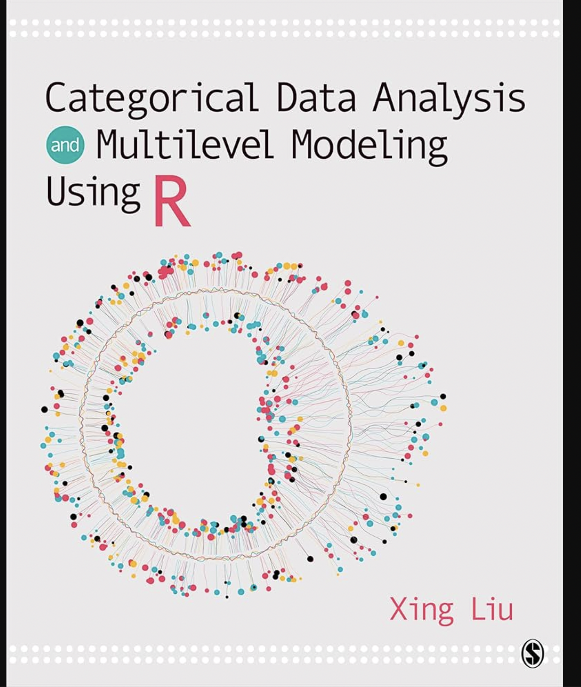

Syllabus
Course Introduction
As a discipline, statistics has given profound tools to the sciences. Statistics is our way of detecting patterns in the noisy universe. Traditionally, psychologists were limited to research questions that could be answered with classical statistical analyses, but without particularly intending to do so, psychologists have found themselves at the cutting age of statistical discovery in the 20th and 21st centuries. This is because we needed to adapt our tools to meet the demands of the complex nature of the phenomena we study. This course will give you the quantitative tools to ask and answer research questions that were impossible to test as recently as a decade ago. Specifically, we will cover the following topics as stand-alone modules:
- Multilevel modeling
- Missing data
- Non-Gaussian statistics: logistic regression, poisson regression, ordinal regression, multinomial regression, beta regression
- Beyond Null Hypothesis Significance Testing (NHST): Structural equation models, Bayesian hypothesis testing
- Process models: Mediation, multiple mediation, path analysis
- Dimension reduction: Factor analysis
I place a strong emphasis on practical application. I believe you are more likely to learn and readily use these analyses in the future if you do them at least once now. Every lecture will have “challenge” demonstrations for you to try the analyses along with me. Every Wednesday there will be a lab going over the material covered that week. The lab assignments will help you build a personal library of example statistical scripts that you will hopefully find useful for years into the future. These lab assignments will be due at the end of class.
Audience
This course is designed for quantitative psychologists but it is relevant to any social and natural scientists studying human behavior.
Prerequisite
The main prerequisite for this course is PSY 503.
NOTE: It is highly recommended (but not mandatory) that students also enroll in PSY 505: Advanced Seminar in Statistical Methods and Research Practices in Psychology (Spring 2024, T: 11am - 1pm), which constitutes an important complement to this course.
Student Learning Outcomes
At the end of the course, students will be able to:
Make informed analytic decisions
Run and code analyses in R
Interpret output and summarize results of the analyses
Effectively communicate results from statistical analyses to a general audience
Use Quarto to write reproducible reports and GitHub for version control and collaboration
Office Hours
I will hold weekly office hours (M: 1-3 P.M.; W: 1-2 P.M.). If you need to see me outside of these hours please schedule a meeting: https://calendly.com/jg9120/30min
Textbooks
I strongly recommend you get the following books:
Xing Liu (2023). Categorical Data Analysis and Multilevel Modeling Using R (1st edition). SAGE Publications Ltd.

Note- I will post PDFs for these chapters so you do not need to buy them, but these are really nice books to have (they are pretty cheap).
Attendance Policy
You’re expected to come to class prepared!
Attendance and participation are crucial to your success in this course. If you are sick or are incapable of participating meaningfully in class (e.g., you have stayed up all night and are going to fall asleep in class), please stay home. I will try my best to record in-class (or record them at home) so you do not miss any content.
Absences and Late Work
If you need to be absent or submit an assignment late, please let me know as soon as possible. We don’t need to know your personal or medical details. We can be flexible, but please respect my time by turning your assignments in on time whenever possible.
Technology
It is expected that you will bring your laptop to class. Please try to keep it class related.
Assignments
Readings
Every week there will be assigned readings. You will be expected to read the weekly readings before class, so you can come prepared to class for student-lead presentations. There are also readings for after class that will aid in the lab portion of the class on Wednesdays.
Student mini-lectures and discussions
Every week (Monday) one of your peers will present an introduction to the method we will be discussing that week, based on the assigned reading for that week (you are to use the assigned articles to guide your presentation and discussion). Each presentation should be be (~20 minutes).
After, I will take over and highlight how to use R to apply these methods to your data.
In these presentations, I would like:
A clear overview of the topic: This should include a brief introduction to the topic, highlighting its relevance and importance in psychological research. You should also address limitations, if any.
Examples and applications: To help peers’ understand the practical implications of the topic, you should provide examples and applications of how the topic is used in psychology. This could include your own research or examples from the literature. If you wanted to walk through an example, that is also welcome.
A discussion of things you did not understand or you had general questions about.
Labs/Exercises
- Each week (Wednesday) we will have one corresponding lab exercise that will be started in class. The purpose is for you to get direct experience conducting the analyses that you learn. Each lab exercise will consist of several questions and will require R (will also accept Python) to answer the questions in a reproducible manner. All lab assignments must be reproducible (i.e., I can replicate the work you did without any errors). You may complete the labs by yourself or working with another person. If you work with another person, your work must obviously be your own.
Ideally, you will finish labs in class. However, if you choose to finish at home, completed labs will be due at 11:59 p.m. on the Sunday of that week. Please let me know if you need an extension. I WILL NOT ACCEPT LABS MORE THAN A WEEK LATE.
Tutorial
For your final project, you will create a tutorial explaining how to run a particular analysis in R. This will involve finding data or using your own data. The final project gives you a chance to pursue a specific method discussed in class and apply it to your own data. These blogs are to be done in Quarto and hosted on your own personal website (we will talk about this in class).
There are a tone of great blog posts out there to serve as your muse!
Final Exam
There is no final exam 😊
Participation
It is expected that you will come to class having read the articles assigned and prepared to discuss the material.
Grades
The default grade is an “A,” and the vast majority of students will make an “A.” If you are particularly engaged with the class either during lecture or outside of class, do all your labs (and revise them in accordance with my feedback) and submit one of the best final project papers, then you will get an A+. If you do a substandard job on your labs (e.g., not submitting or doing really poorly on a number of labs), then you could make an A- or lower. Or, if you submit an abysmally bad final paper, then you can make an A- or lower. If you are at risk for making less than an A- in the course (i.e., a B+ or lower) due to lab submissions, then we will let you know before the last date you can cancel the class. In terms of your GPA, getting an A or A+ does not matter. This marking scheme is purposefully non-quantitative so that you will focus on learning instead of on your marks. Basically, you will make an A unless you slack off and do not care about the training you are receiving through this class. There is a big difference between “slacking off” and being overwhelmed, though. Please reach out to me if you feel overwhelmed.